節分なので出雲大社で豆まきをしました。
2025/02/02
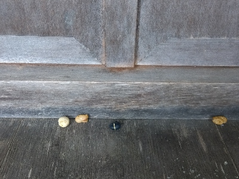
出雲大社の節分では参拝した人がお賽銭箱の前で豆をまきます。
私も豆を持参して、福は内福は内、鬼は外鬼は外って言いながら豆まきしました。人によって豆まきのやりかたは違うみたいでした。
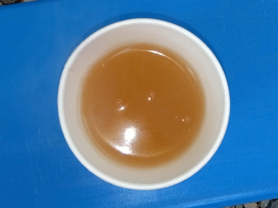
帰りに甘酒をいただきました。色が白いタイプじゃないものがあるんですね。北島さんでは生姜湯をいただきました。
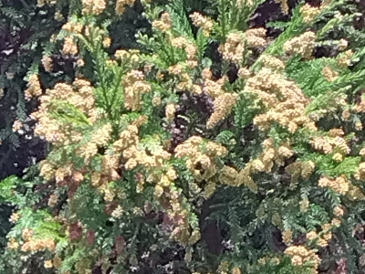
杉の木がゆらゆらと揺れてました。そろそろ花粉が飛びそうです。
島根県出雲市大社町杵築東195
2025/02/02

出雲大社の節分では参拝した人がお賽銭箱の前で豆をまきます。
私も豆を持参して、福は内福は内、鬼は外鬼は外って言いながら豆まきしました。人によって豆まきのやりかたは違うみたいでした。

帰りに甘酒をいただきました。色が白いタイプじゃないものがあるんですね。北島さんでは生姜湯をいただきました。

杉の木がゆらゆらと揺れてました。そろそろ花粉が飛びそうです。
2024/11/16
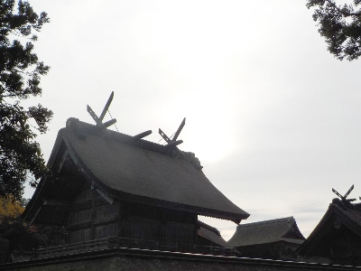
朝8時くらいに行ったので、わりと近くの駐車場にスムーズに車を止めれました。
神在月で神様が多いので、あっちもこっちもで参拝しました。でも大量に参拝している人は少数派で、ほとんどの人は賽銭箱がある場所だけ参拝してる感じがしました。せっかくの神在祭なのになー。
お客さんが多いのので、高い場所の写真を撮りました。
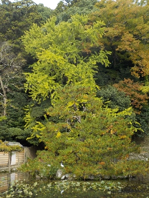
神楽殿横のイチョウです。うっすら黄色で明るい感じでキレイでした。
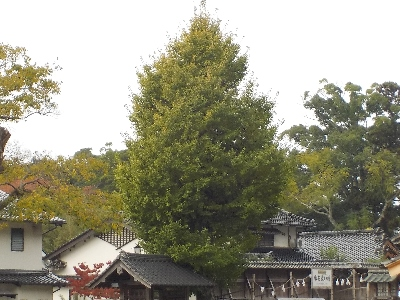
北島さんのイチョウはまだ緑でした。イチョウはもうちょっとしたら紅葉が楽しめそうです。
2024/08/09
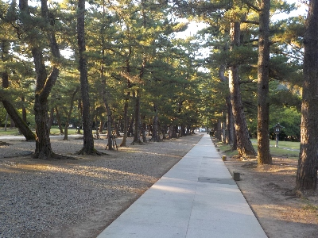
平日の夕方なので空いてて静かでした。
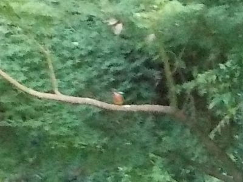
写真の真ん中にカワセミが映っています。カメラのズーム倍率が少ないのでボケてます。
高倍率のカメラが欲しいな。
2024/06/08
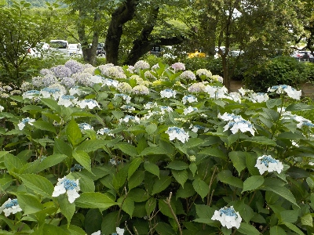
キレイなんですが、今年は雨が少ないせいかコンディションが良くないかな。
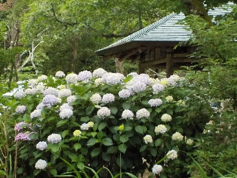
全体的に木が大きくなってました。
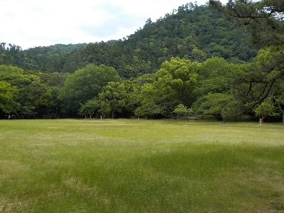
今日は曇りだったせいか、緑が深くでキレイでした。
2024/05/19
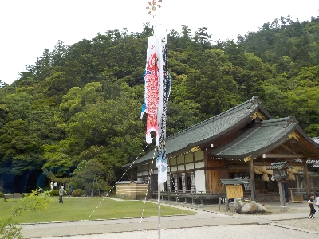
5月なので鯉のぼりがありました。
時期的なものがあるのはいいですね。いい思い出になります。
2024/04/06
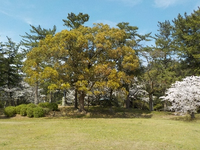
桜を見に来たんですが、桜よりもこの大きな木の新緑がとてもキレイだと思いました。
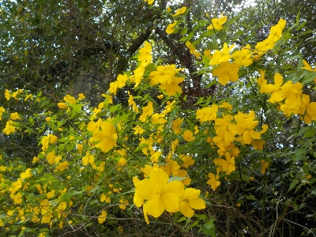
ヤマブキの花も美しかったです。
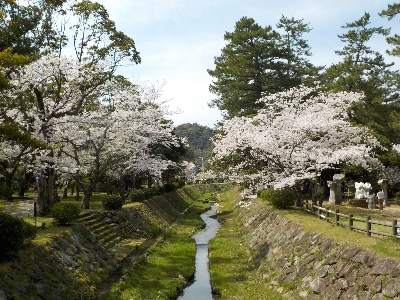
桜のまわりは人が多かったので写真はやめました。
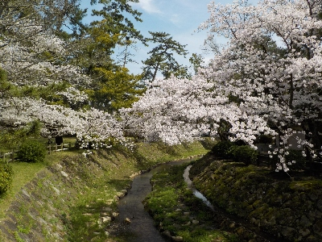
川の上は人がいないので遠慮なしに撮れていいです。
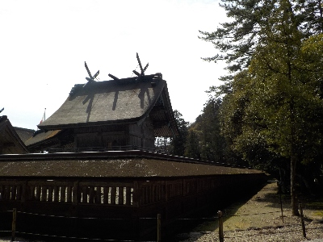
本殿も見ました。
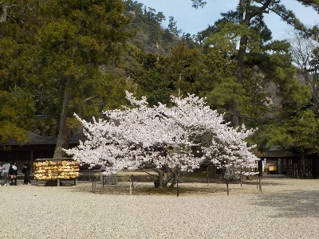
たまたま人がいなかったので桜の写真が撮れました。１本の桜がノビノビと育ってる姿はいいですね。
2024/02/10
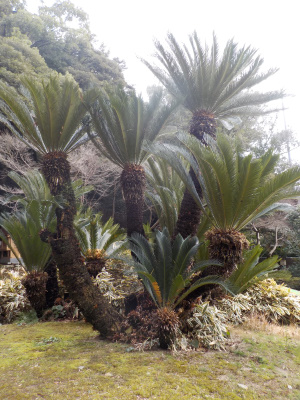
北島國造館のソテツです。
北島さんと本殿に行った後に雨が降り出しました。傘を持っていなかったので、走って駐車場に帰りました。
今日は雨が降らないと思っていたんだけどな。
2023/06/11
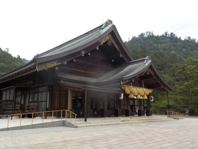
たまたまお客さんがいなかったのでいい写真が撮れました。ラーッキーでした。
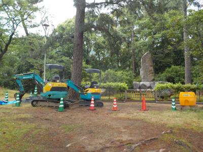
工事してたので、何だろうと思って見たら大本教のものでした。
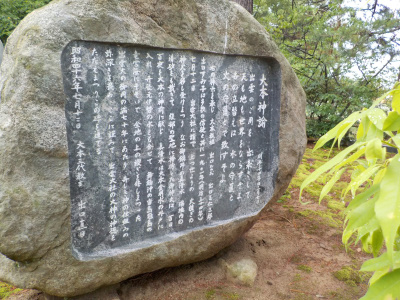
境内にあるってことは、よほど関係が深いんでしょうね。
詳しいことが書いてありました。
2023/06/11
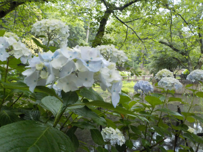
出雲大社はアジサイの名所で有名ではないですが、アジサイが多くあります。
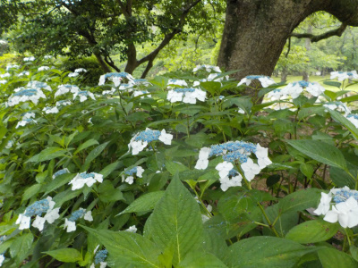
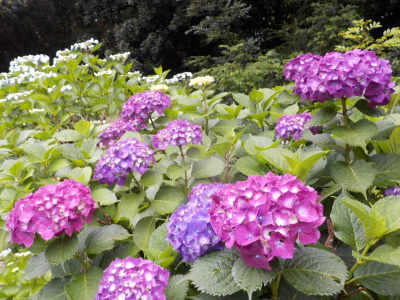
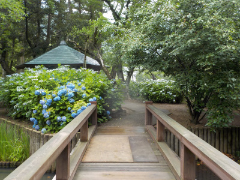
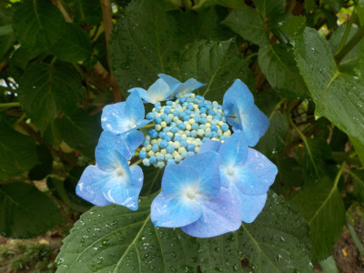
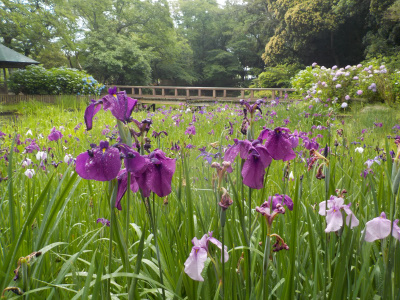
アジサイの他にも見るものがあるのでオススメです。
2023/03/28
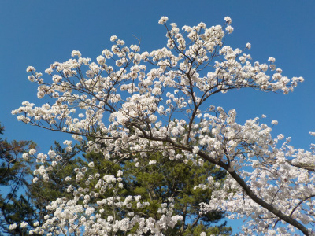
快晴の日の桜はいいですね。今日花見に出かけて良かったと思いました。
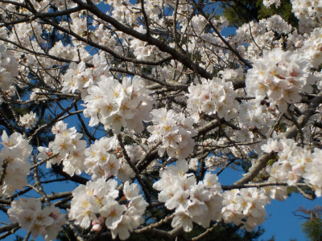
玉状の花が沢山出来てました。
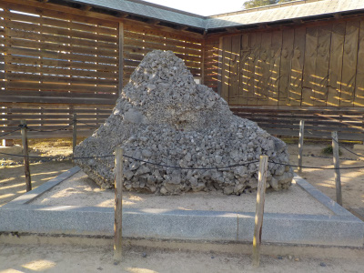
桜とは関係ないですが、サザレ石があると聞いていたので見に行きました。大きい塊として見たので、小さいツブツブが印象に残らなかったです。
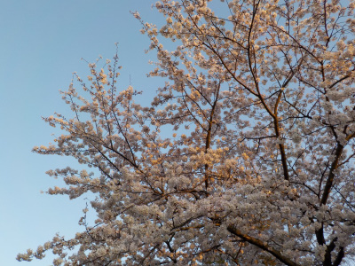
夕方までいたので、夕日に照らされた桜も見ました。
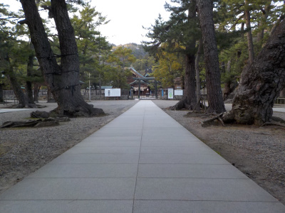
ちょっと遅くなったので出雲大社の正面は柵で閉められていました。無人な感じの出雲大社です。
2023/02/23
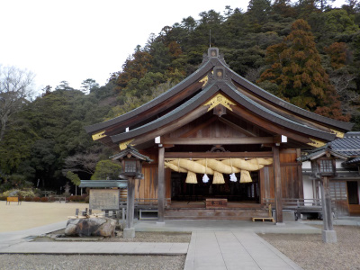
たまたま行った時に人がいなかったので写真を撮りました。運が良かったです。
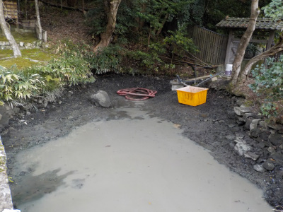
理由は分かりませんが、部分的に池の水が抜かれていました。
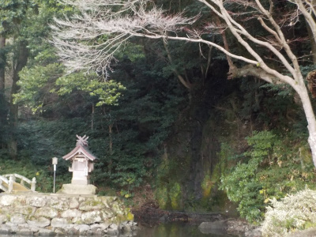
いつもは滝があって水が流れていますが、こちらの水も止められていました。
何の工事か分かりませんが、見た目がいまいちなので早く元に戻って欲しいです。
2023/01/22
元日のころはコロナが流行していたので、旧正月にお詣りしました。天気が良かったのでぐるっと回りました。
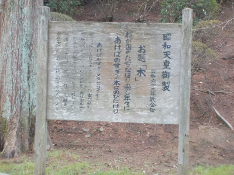
大切なことが書かれていると思うんですが、文字が薄く読めない所がありました。修繕されるといいですね。
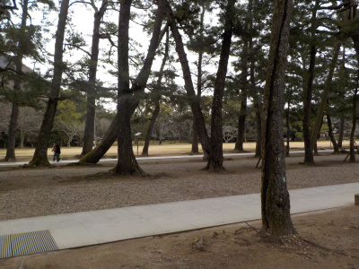
綺麗な参道を歩くのは気持ちいいです。
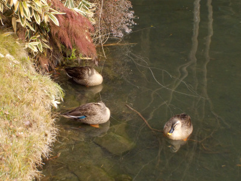
北島さんの池に合鴨がいました。近づいても逃げなかったです。もしかしてペット？
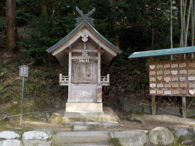
北島さんの天満宮です。何か勉強しようとは思うんですが、やってもなかなか身に付かないです。
今年は何か勉強したいって思うものが見つかるかな？
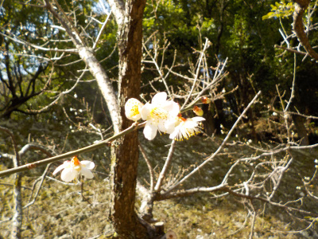
梅が咲いていました。
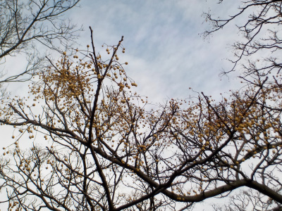
今日歩いていてセンダンの実をよく見ました。出雲大社にはセンダンの木が多く植わっていますね。
何か理由があるのかな？
歩いていて清掃スタッフの方を何人か見ました。出雲大社がいつもキレイなのはこの方々のおかげなんだなと思いました。快適に散歩できました。
2022/06/12
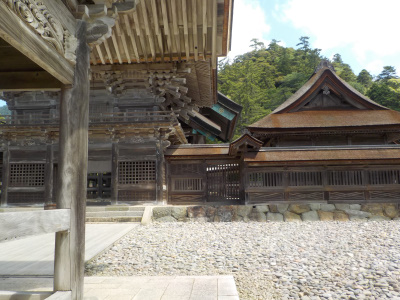
大社は観光客が多いって話を聞くんですけど、そんなことなかったです。
観光バスが次々入らないと人数は多くならないですね。
夫婦2人とか少人数の友達みたいな感じの方が多かったです。
2022/01/02
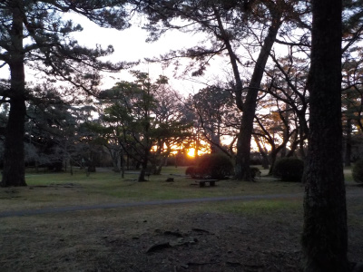
お店屋さんが開店する時間帯だと道路が渋滞するので、朝7時過ぎに行きました。
道路も近くの駐車場も空いてるし、人も少なくて快適でした。
その上、日の出が見れました。日の出見るのっていいですね。
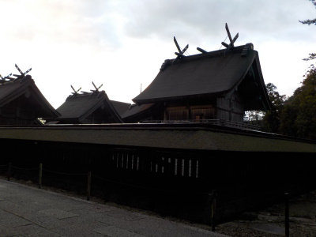
お正月の三が日は本殿の門の中に入れるんですが、ここも空いてたので色々見ながら参拝しました。
朝早いとちょっと暗いので、写真も暗いですね。でも人が写り込まない写真が撮れました。
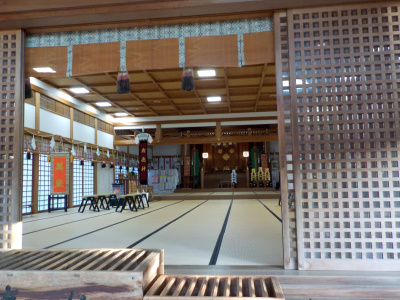
最後に北島さんに行きました。この頃になると日が当たって明るくなりました。
来年も天気のいい朝にお詣りしようと思います。
2021/01/03
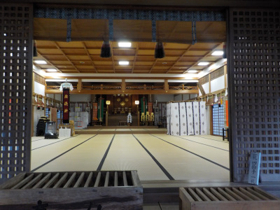
出雲大社北島国造館で初詣です。
出雲大社本殿は立派で見るのは好きですが、何かをするときはこちらの方が好きです。
信仰してないですけど。
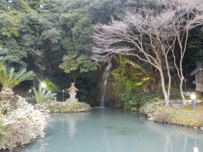
池もこちらの方が好きだな。
2020/12/12
お蕎麦を食べた帰りに出雲大社に寄りました。
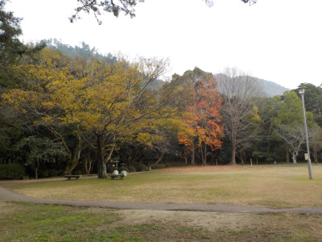
まだ紅葉が少し残っていました。今年は観光地で紅葉を見るのはこれが最初で最後かな。
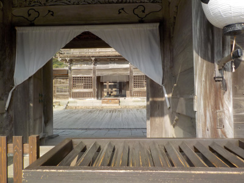
本殿で参拝です。コロナ感染予防のためか、手水舎の柄杓がありませんでした。水は流れているので、手で取って清めました。
お昼時なので北側から本殿を見ると超逆光でした。これはこれで神秘的かなと写真を撮りました。
テレビ番組で稲佐の浜の砂を供えて持ち帰ろうキャンペーンみたいなをしてて、それ用に砂のケースが大量に増設されていますが、私がいったときは誰も持ち帰る人はいませんでした。これから人気が出るといいですね。
神楽殿裏の紅葉はまだ葉っぱが多く残っていました。
来年の干支の牛ですが、コロナ感染防止のため触らないでくださいとのことでした。
どこでもコロナが影響していますね。
神送りも終わったし12月で寒くなったので、出雲大社は空いているだろうと思って寄ったんですが。人が多かったです。大社近くの蕎麦屋は行列が出来てるし、人気店は狭い店内に人が多く入っていました。
GOTOトラベルのおかげかな。
今どきの観光地のお土産物屋さんて、小さい店舗に商品を高く沢山置いているお店が多いですね。通路狭いし、空気流れないので密ですね。注意しないとって思いました。
2020/01/26
旧正月なので出雲大社にお参りに行きました。
出雲大社は神在月を旧暦でやるんだから、お正月も旧暦に行ったほうが絶対いい気がする。
受験シーズンなので、天満宮の絵馬にはリアルなお願いがいろいろ書かれていました。
前向きで明るいことが書かれているので、読んでて気持ちいいいです。
近くのウサギ像も勉強していました。
出雲の日イベントで日本酒とおつまみが振るまわれていました。
何回ももらえるので、お酒の飲み比べが出来ました。
お得でおいしいイベントでした。
2019/09/15
この石はなに？
出雲大社の庁舎前にあるんですが、オブジェ？
なんだか近寄りにくいものがありました。何目的なんだろう。
参道を歩いていたらイベントをしていたので寄りました。
一般社団法人 WAVES Japanの皆さんで、「栄養を幸せのちからに。｝をテーマに活動をされているそうです。
話を聞くと、日本人は高齢者で痩せた人が多い。
栄養が取れず、筋肉が少ない。
そして体を動かしにくくなり、生活に支障が出る。
なのでタンパクを多く摂取し、体力をつけましょうってことでした。
体力欲しいですよね。
疲れがたまるとあちこち痛くなったり、だるくてたまらないです。
タンパク質とかアミノ酸とか今以上に摂取しなきゃと思いました。
今日は出雲大社でいい話が聞けて良かったです。あと散歩でいい運動もできました。
身長、体重、握力、指力、ふくらはきの太さ、舌圧を測定したらお土産をもらいました。
栄養補助食品いろいろです。
こうゆうのって薬っぽくて苦手です。特に吸うタイプ。
見た目がお菓子とか、デザートっぽいといいんだけどな。
2018/01/14
お正月に行けなかったので、今日お詣りしました。
境内の杉の花です。もうすぐ花粉が飛びそうですね。
神楽殿の奥にある社がなくなっていました。
工事中です。
出雲大社はまだまだ遷宮中みたいです。
平成31年の3月に全部終わるのかな。
御仮殿がすぐそばに設置されていました。
天穂日命社、天夷鳥命社、稲荷社、火守社、姥神社、天満宮はこちらになります。
合格祈願もここですね。
大社のあちこちにウサギが増えていますね。出来たら生きてる本物のウサギがいるといいんだけどな。
このウサギってポケモンのピカチューに似てないですかね？
かけっこしてるウサギもいました。
2017/01/28
旧正月に出雲大社で初詣です。
2015/11/14
世界糖尿病デーで出雲大社ブルーライトアップ
2015/05/05
ゴールデンウィークは大社に行きました。
2015/01/18
出雲大社で合格祈願はいかがでしょう。
2014/04/06
出雲大社で桜の花見をしました。
2014/03/09
出雲大社で散歩しました。
2014/01/01
出雲大社で初詣。
2013/05/06
出雲大社は参拝者が多いですね。
2013/01/01
元旦に出雲大社
2010/01/02
出雲大社に車で楽に行けました。
2010/4/18
出雲大社の八重桜が満開
2010/3/22
出雲大社の桜はもうちょっとかな。
2010/1/3
出雲大社の初詣
2009/7/26
大社の神門通り軽4朝市
2009/5/31
出雲大社は改装中
2009/1/3
出雲大社の初詣
2008/4/6
出雲大社で桜の花見
2008/1/2
出雲大社の初詣
2007/4/8
出雲大社の桜
2007/2/12
出雲大社の工事
地元の人も気軽に遊びにいけばいいと思う。